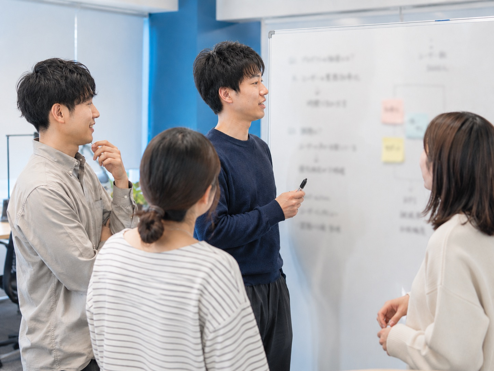

PHILOSOPHY
学びと仕事と機会をめぐらせる、
社会の動脈になる。
人生の中で積み重ねた学びと経験を、次の仕事と機会へ。Arteriaが大切にする考え方をご紹介します。
時間の積み重ねを、
次の価値へつなげる。
人はその時間の中で、学び、経験し、失敗し、出会い、少しずつ変わっていく。
最初は意味のないように見える点のような経験も、やがて線となり、面となり、その人の人生を形づくっていく。
Arteriaは、人と企業と教育の間にある分断をなくし、学びが仕事につながり、仕事が新たな経験を生み、その経験が次の機会へめぐる仕組みをつくります。

CORE / MISSION / VISION
学びと経験を、キャリアにつながる価値へ変える。
人と企業と教育が循環し、一人ひとりが人生を謳歌できる社会をつくる。
ARTERIA WAY
私たちが日々の仕事で体現する、
7つの行動指針。
-
A
Act with Purpose
目的を持って行動する
-
R
Respect Every Person
一人ひとりを尊重する
-
T
Think Deep
本質から考える
-
E
Empower Others
人の可能性を引き出す
-
R
Run Together
伴走し、共に成長する
-
I
Improve Every Day
昨日より一歩前へ
-
A
Achieve Together
共に成果を創る
CONTACT